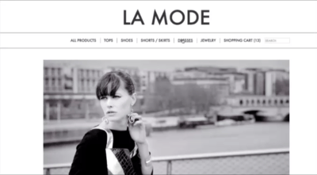
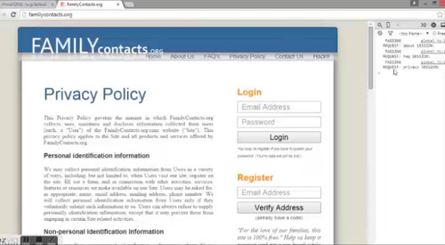
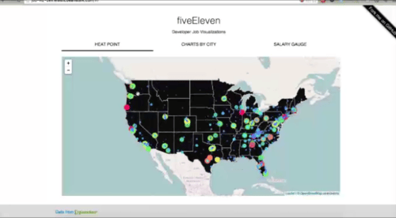

About...
Hello! I'm an extremely driven and creative Full Stack Developer who is currently open for career opportunities
as a front-end or back-end web developer in the Greater Seattle Area.
I'm a recent graduate of Coding Dojo, a coding school located in Bellevue, WA that teaches 3 full stacks in 3
months. I'm capable of learning new technologies very quickly, and am always looking for opportunities to
further expand my skills and grow as a developer.
Continue reading...
La Mode

La Mode is an Ecommerce website for designed to market various clothing products. Users are able to view the
available garments, select their desired quantity, and compile a shopping cart for making a final purchase.
Technologies:
Family Contacts

Family Contacts is a free application for managing. sharing, and visualizing your family relationships for both
extended and immediate famiy. As an essential feature of the project. your log-in information determines who you
can see and reveals how people are related to you.
Technologies:
fiveEleven

Five Eleven is a data visualization project built on the Python software stack The application transforms the
developer job-hunt into a more visual, user friendly experience. Based on location, technology popularity, and
other vast data sets, users may easily visualize the varying sizes and concentrations of the junior developer
job market across the nation.
Technologies: